<mat-toolbar color="primary">
  <button mat-icon-button class="example-icon" aria-label="Example icon-button with menu icon" (click)="toggle()">
    <mat-icon>menu</mat-icon>
  </button>
  <!--  -->
  <span id="main-title-span" routerLink="/">Balazs Ferencz Portfolio App</span>
  <span class="example-spacer"></span>
  <button mat-icon-button class="example-icon favorite-icon" aria-label="Example icon-button with heart icon">
    <mat-icon>help</mat-icon>
  </button>
  <button mat-icon-button class="example-icon" aria-label="Example icon-button with share icon">
    <mat-icon>language</mat-icon>
  </button>
</mat-toolbar>
